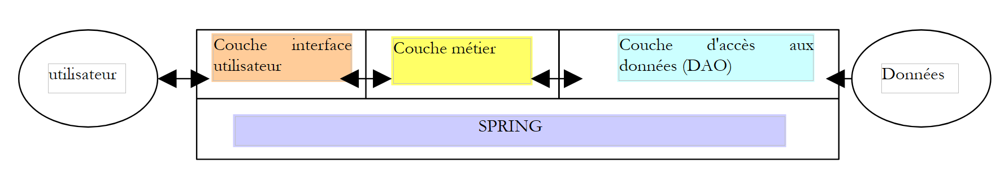
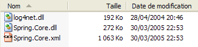
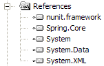

2. Configuring an Application with Spring
Consider a classic 3-tier application:
 |
We will assume that access to the DAO layer is controlled by a [IArticlesDao] interface:
....
Namespace istia.st.articles.dao
Public Interface IArticlesDao
' list of all items
Function getAllArticles() As IList
' add an article
Function ajouteArticle(ByVal unArticle As Article) As Integer
' deletes an article
Function supprimeArticle(ByVal idArticle As Integer) As Integer
' modify an article
Function modifieArticle(ByVal unArticle As Article) As Integer
' search for an article
Function getArticleById(ByVal idArticle As Integer) As Article
' deletes all articles
Sub clearAllArticles()
' inserts items within a transaction
Sub doInsertionsInTransaction(ByVal articles As Article())
' changes the stock of an item
Function changerStockArticle(ByVal idArticle As Integer, ByVal mouvement As Integer) As Integer
End Interface
End Namespace
In the data access layer or DAO layer (Data Access Object), it is common to work with a SGBD. Consider the case where this is accessed via a ODBC driver. The skeleton of a class accessing this ODBC source could be as follows:
NameSpace istia.st.articles.dao
Imports System.Data.Odbc
...
Public Class ArticlesDaoPlainODBC
Implements istia.st.articles.dao.IArticlesDao
' private fields
Private connexion As OdbcConnection = Nothing
Private DSN As String
Public Sub New(ByVal DSN As String, ByVal user As String, ByVal passwd As String)
'retrieve the source name ODBC
Me.DSN = DSN
' we create the connection string
Dim connectString As String = String.Format("DSN={0};UID={1};PWD={2}", DSN, user, passwd)
'we instantiate the connection
connexion = New OdbcConnection(connectString)
End Sub
....
End Class
End NameSpace
To perform an operation on the ODBC source, any method requires a [OdbcConnection] object that represents the connection to the database through which data will be exchanged between the database and the application. To create this object, three pieces of information are required:
the name of the ODBC source | |
the identity used to establish the connection | |
the password associated with this identity |
Our class [ArticlesDaoPlainODBC] obtains this information via the external agent that instantiates a member of the class. One might wonder how the agent obtains the three pieces of information required to instantiate the class [ArticlesDaoPlainODBC]. Let’s take an example. Suppose we want to write a test class for the [Dao] layer. We would have the following architecture:
 |
The skeleton of a NUnit test class [http://www.nunit.org/] could look like this:
Imports System
Imports System.Collections
Imports NUnit.Framework
Imports istia.st.articles.dao
Imports ArticlesDaoSqlmap = istia.st.articles.dao.ArticlesDaoSqlMap
Imports Article = istia.st.articles.domain.Article
Imports System.Threading
<TestFixture()> _
Public Class NunitTestArticlesDaoPlainOdbc
' the test object
Private articlesDao As IArticlesDao
<SetUp()> _
Public Sub init()
' create an instance of the object to be tested
articlesDao = New ArticlesDaoPlainODBC("odbc-firebird-articles", "SYSDBA", "masterkey")
End Sub
<Test()> _
Public Sub testGetAllArticles()
' visual check
listArticles()
End Sub
' screen listing
Private Sub listArticles()
Dim articles As IList = articlesDao.getAllArticles
For i As Integer = 0 To articles.Count - 1
Console.WriteLine(CType(articles(i), Article).ToString)
Next
End Sub
End Class
The Nunit testing environment is a port to the .NET platform of the JUnit environment that exists for the Java platform. In the class above, the method with the <SetUp()> attribute is executed before each test method. The one with the <TearDown()> attribute is executed after each test. There is none in the example above. Here, we see that the [init] method, which has the <SetUp()> attribute, instantiates a [ArticlesDaoPlainODBC] object by hard-coding the three pieces of information that the object’s constructor requires.
Our test class is vulnerable to changes in any of the hard-coded values. It would be preferable to store these in a configuration file to avoid unnecessary recompilations when they change. The standard approach to configuring an application is to use a file containing all the information that is likely to change over time. There is a wide variety of configuration files. The current trend is to use XML files. This is the approach taken by Spring. The file configuring a [ArticlesDaoPlainODBC] object could look like this:
<?xml version="1.0" encoding="iso-8859-1" ?>
<!DOCTYPE objects PUBLIC "-//SPRING//DTD OBJECT//EN"
"http://www.springframework.net/dtd/spring-objects.dtd">
<objects>
<!-- the IArticlesDao interface implementation class -->
<description>Gestion d'une table d'articles</description>
<object id="articlesdao" type="istia.st.articles.dao.ArticlesDaoPlainODBC, articlesdao">
<constructor-arg index="0">
<value>odbc-firebird-articles</value>
</constructor-arg>
<constructor-arg index="1">
<value>SYSDBA</value>
</constructor-arg>
<constructor-arg index="2">
<value>masterkey</value>
</constructor-arg>
</object>
</objects>
The Spring configuration file describes objects to be instantiated. It generally does not specify when they will be instantiated. The timing of their instantiation is therefore determined by the code that uses this file. Objects described in a Spring configuration file can be instantiated and initialized in two different ways:
- by specifying, as shown above, the parameters to be passed to the object’s constructor
- by providing values to the object’s properties (Property). In this case, the object must have a default constructor that Spring will use for instantiation.
Objects that, within an application, are intended to provide a service are often created as a single instance. These are called singletons. Thus, in our multi-tier application example presented at the beginning of this document, access to the product database will be handled by a single instance of the [ArticlesDaoPlainODBC] class. For a web application, these service objects serve multiple clients instances at the same time. A service object is not created for each client.
The Spring configuration file above allows you to create a single service object of type [ArticlesDaoPlainODBC] in a package named [istia.st.articles.dao]. The three pieces of information required by the constructor of this object are defined within a <object>...</object> tag. There will be as many such <object> tags as there are singletons to be constructed.
Let’s break down the configuration:
<objects> is the root tag of a Spring configuration file. It declares the description of the singleton objects to be instantiated.
The <description> tag is optional. It can be used, for example, to describe the purpose of the configuration file.
<object id="articlesdao" type="istia.st.articles.dao.ArticlesDaoPlainODBC, articlesdao">
...
</object>
The <object> tag is used to describe an object to be instantiated. It has two attributes here:
- name: object identifier. The external code will reference the object using this name.
- class: in the form "class name, assembly name". The first part is the full name of the class to be instantiated. The second part is the name of the DLL that contains this class. In our example, the class is located in a file named [articlesdao.dll]
The content of the <object> tag is used to describe how the object is instantiated:
<object id="articlesdao" type="istia.st.articles.dao.ArticlesDaoPlainODBC, articlesdao">
<constructor-arg index="0">
<value>odbc-firebird-articles</value>
</constructor-arg>
<constructor-arg index="1">
<value>SYSDBA</value>
</constructor-arg>
<constructor-arg index="2">
<value>masterkey</value>
</constructor-arg>
</object>
Recall the signature of the constructor for the [ArticlesDaoPlainODBC] class:
The Spring object [articlesdao] will be instantiated by the above constructor using the three pieces of information from the configuration file: [odbc-firebird-articles, SYSDBA, masterkey].
When will the objects defined in the Spring file be constructed? In every application, there is a method guaranteed to be the first to execute. It is generally within this method that the construction of singletons is requested. The initialization of an application can be delegated to the main method of that same application, if it has one. For an application ASP.NET, this might be the method [Application_Start] in the file [global.asax]. For our test class [Nunit], the application is initialized in the method associated with the <Setup()> attribute.
How do we use the configuration file above in our [Nunit] class? Here is an example:
Imports System
Imports System.Collections
Imports NUnit.Framework
Imports istia.st.articles.dao
Imports ArticlesDaoSqlmap = istia.st.articles.dao.ArticlesDaoSqlMap
Imports Article = istia.st.articles.domain.Article
Imports System.Threading
Imports Spring.Objects.Factory.Xml
Imports System.IO
<TestFixture()> _
Public Class NunitSpringTestArticlesDaoPlainOdbc
' the test object
Private articlesDao As IArticlesDao
<SetUp()> _
Public Sub init()
' retrieve an instance of the Spring object manufacturer
Dim factory As XmlObjectFactory = New XmlObjectFactory(New FileStream("spring-config-plainodbc.xml", FileMode.Open))
' request instantiation of item object dao
articlesDao = CType(factory.GetObject("articlesdao"), IArticlesDao)
End Sub
<Test()> _
Public Sub testGetAllArticles()
' visual check
listArticles()
End Sub
' screen listing
Private Sub listArticles()
Dim articles As IList = articlesDao.getAllArticles
For i As Integer = 0 To articles.Count - 1
Console.WriteLine(CType(articles(i), Article).ToString)
Next
End Sub
End Class
Comments:
- To instantiate objects from the Spring configuration file, we use an object of type [XmlObjectFactory]. This is a "Factory" type object, c.a.d—an object used to create other objects (Factory = factory). Spring has several types of "Factory" depending on the configuration file used. Here, the file is a XML file, so we use a [XmlObjectFactory] type.
- Quite logically, an object of type [XmlObjectFactory] requires the name of the configuration file XML, in this case [spring-config-plainodbc.xml]. More precisely, the [XmlObjectFactory] type is instantiated with a read stream created from the XML file, whose name is provided.
- Once the object of type [XmlObjectFactory] is created, an object from the configuration file is obtained via [XmlObjectFactory].getObject("identifier") where "identifier" is the [id] attribute of one of the objects in the configuration file.
- If the requested object has not already been instantiated, Spring instantiates it using the information from its configuration file and returns a reference to it to the calling program. If the object has already been instantiated, Spring simply returns the reference to the existing object. This is the singleton principle.
- Note that the test class [Nunit] does not know the name of the data access class. This name is in the configuration file. The test class simply requests an object that implements the [IArticlesDao] interface:
' the test object
Private articlesDao As IArticlesDao
<SetUp()> _
Public Sub init()
...
articlesDao = CType(factory.GetObject("articlesdao"), IArticlesDao)
End Sub
That is the whole point of Spring. If we change the implementation class, our test class will not need to be changed. We will simply modify the Spring configuration file. The test class itself simply works with an interface rather than a class.
Let’s wrap up this presentation with a few practical points.
When we write "Spring will instantiate...", what exactly do we mean? For the .NET platform, Spring is contained in three files:

For a .NET project built with Visual Studio that needs to use Spring, proceed as follows:
- The three files above will be placed in the project’s [bin] folder
- [Spring.Core.dll] must be included in the project references:

- Classes that use Spring must import certain namespaces, often including the following:
Another practical point: where should the Spring configuration file be placed? There are several possible locations. One of them is the [bin] folder of the project. This is where the [spring-config-plainodbc.xml] file from the example studied was placed.